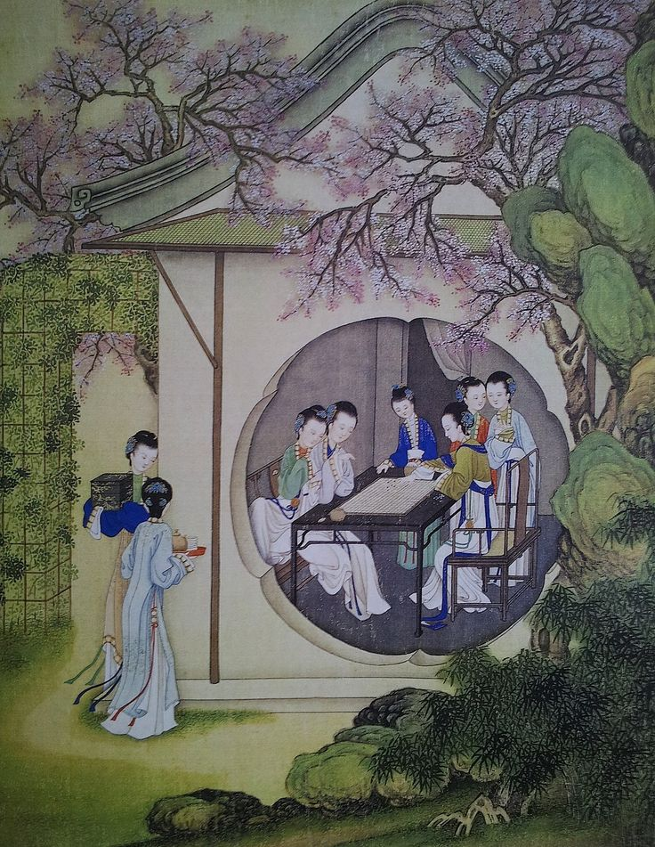
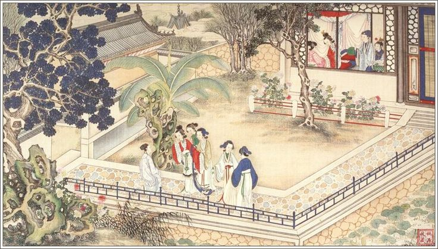
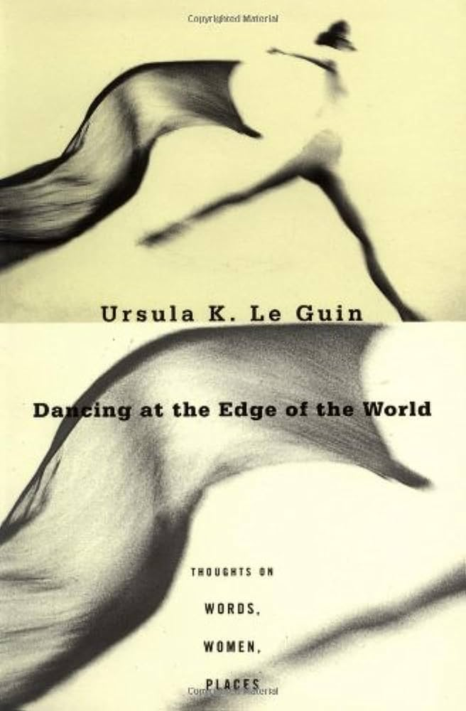
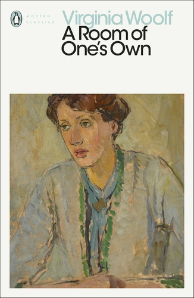
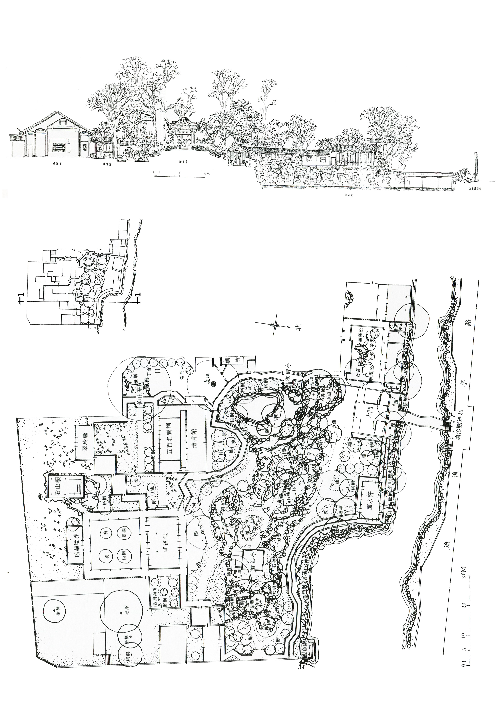
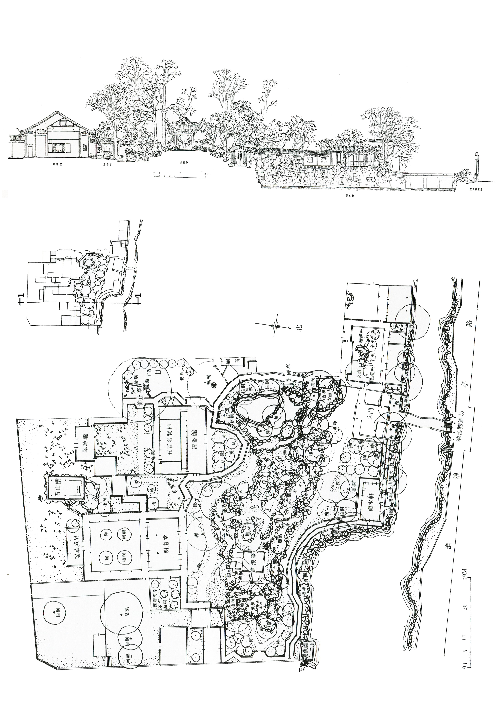
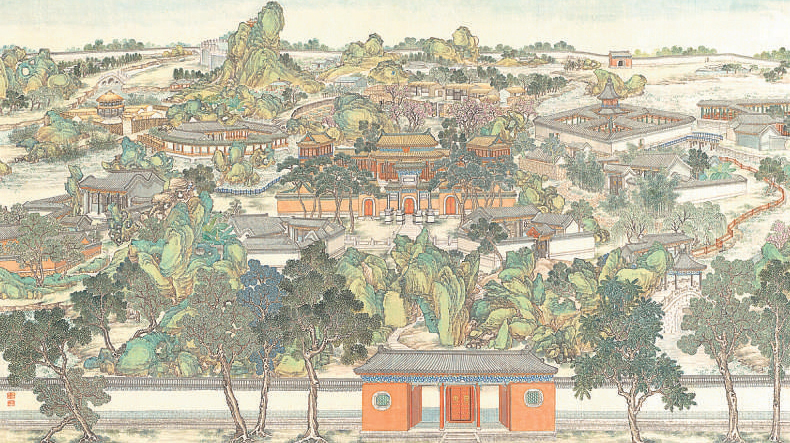

Essay Abstract:
Building upon Ursula K. Le Guin's Carrier Bag Theory of Fiction, this paper examines the narrative structures and feminist dimensions of Chinese gardens, investigating how these landscapes function as open, non-linear containers that offer women private and expressive spaces. Unlike traditional Chinese architecture, which emphasizes axial symmetry, hierarchical order, and centralized spatial organization—often mirroring the authoritarian ideology of feudal China—Chinese gardens embody decentralized spatial characteristics, characterized by fluidity, interwoven pathways, and cyclical movement.
Focusing on the Grand View Garden (Daguanyuan) in Dream of the Red Chamber, one of the Four Great Classical Novels of China, this study explores how this constructed landscape, as a container of the female world, encapsulates the emotions, creative pursuits, and destinies of women in the Qing dynasty court. Furthermore, by drawing parallels between the literary and historical practice of Ming and Qing dynasty women composing poetry in garden settings and Virginia Woolf’s concept in A Room of One’s Own, this paper interrogates the spatial agency of women and their self-expression within constructed environments.
Contribution to Knowledge Statement:
This study contributes to the fields of feminist spatial theory, narrative studies, and Chinese garden aesthetics by integrating Le Guin’s Carrier Bag Theory of Fiction with the spatial analysis of Chinese gardens. While previous research has extensively examined the architectural and symbolic functions of gardens in Chinese literature, there has been limited exploration of how these landscapes serve as narrative devices that facilitate women’s agency and self-expression.
This research advances the understanding of feminist landscape narratives by demonstrating that Chinese gardens not only reflect cultural aesthetics but also embody alternative, de-heroized modes of storytelling that center female voices. It also contributes a comparative, cross-cultural perspective by linking Chinese landscape narratives to broader feminist spatial theories, thus offering a new methodological framework for analyzing gendered spaces in literature.
Annotated Bibliography:
1. K. Le Guin, Ursula. Dancing at the Edge of the World : Thoughts on Words, Women, Places. New York, N.Y., Grove, 1989, pp. p165-170.
Quote: “The first cultural device was probably a recipient.... Many theorizers feel that the earliest cultural inventions must have been a container to hold gathered products and some kind of sling or net carrier. “ “I differ with all of this. I would go so far as to say that the natural, proper, fitting shape of the novel might be that of a sack, a bag. A book holds words. Words hold things. They bear meanings. A novel is a medicine bundle, holding things in a particular, powerful relation to one another and to us. “
2. Woolf, Virginia. A Room of One’s Own. London, Hogarth Press, 1929.
Quote: “A woman must have money and a room of her own if she is to write fiction. “ “Women have served all these centuries as looking glasses possessing the magic and delicious power of reflecting the figure of man at twice its natural size. “ “Lock up your libraries if you like; but there is no gate, no lock, no bolt that you can set upon the freedom of my mind.”
3. 张卜予. A Brief Discussion on the Female Space in Traditional Private Gardens in Jiangnan. 1 May 2015.
Spatial and social thinking: The layout of traditional Chinese gardens is generally designed with a front yard and a rear yard with an axis symmetry, and most of them are inhabited by women. Although the scenery is beautiful on the surface, with miniature mountains and rivers and flowing landscapes, the dominance of space is still in the hands of men. In ancient China, women's residences were often called "boudoirs" and unmarried women were not allowed to go out easily. Although the garden includes mountains and water, it seems to have built a miniature world, but it is actually a kind of prison for women.
 


4. Xueqin Cao, et al. A Dream of Red Mansions : An Abridged Version = [Hong Lou Meng]. Boston, Zheng & Zui Co, 1996.
Spatial and social thinking: Although the Grand View Garden provides a brief "utopia" for women, it is eventually destroyed as the Jia family declines. This echoes the fragility of the container bag itself proposed by Le Guin - it carries stories, but it may also perish over time.
5. Massey, Doreen. Space, Place and Gender. Minneapolis, Minn., University Of Minnesota Press, 1994.
Quote: “Different social groups have distinct relationships to space, and the spatial organization of society can thus be understood as both a product of and a tool for social relations, including power.” "The way we imagine space has effects; it makes a difference to how we see the world, and therefore to how we act in the world." "The limitation of women’s mobility... has been in some cultural contexts a crucial means of subordination."